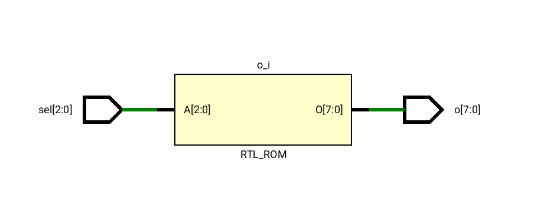

Σε αυτήν την αρχιτεκτονική χρησιμοποιήθηκε η δομή with ... select ώστε να γίνει η αντιστοίχηση του σήματος εισόδου sel στο σήμα εξόδου o. Παρακάτω φαίνεται το RTL σχηματικό που είναι μια ROM η οποία κάνει την αντιστοίχηση του αποκωδικοποιητή.

library IEEE;
use IEEE.std_logic_1164.all;
entity decoder8 is
port (
sel : in std_logic_vector(2 downto 0);
o : out std_logic_vector(7 downto 0)
);
end decoder8;
architecture decoder8_dataflow of decoder8 is
begin
with sel select o <=
"00000001" when "000",
"00000010" when "001",
"00000100" when "010",
"00001000" when "011",
"00010000" when "100",
"00100000" when "101",
"01000000" when "110",
"10000000" when "111",
"XXXXXXXX" when others;
end decoder8_dataflow;Επαναλαμβάνουμε τη σχεδίαση του αποκωδικοποιητή τώρα χρησιμοποιώντας behavioral αρχιτεκτονική. Χρησιμοποιείται ένα process με sensitivity list το σήμα sel το οποίο έχει μια δομή case. Η διαφορά με την dataflow αρχιτεκτονική είναι ότι τα statements τώρα είναι sequential. Όλο το process περιγράφει sequential statements αλλά στο συγκεκριμένο παράδειγμα ούτως ή άλλως υπάρχει μόνο το case. Το RTL σχηματικό είναι ακριβώς το ίδιο με το αντίστοιχο στην περίπτωση της dataflow αρχιτεκτονικής.
library IEEE;
use IEEE.std_logic_1164.all;
entity decoder8 is
port (
sel : in std_logic_vector(2 downto 0);
o : out std_logic_vector(7 downto 0)
);
end decoder8;
architecture decoder8_behavioral of decoder8 is
begin
process(sel)
begin
case sel is
when "000" => o <= "00000001";
when "001" => o <= "00000010";
when "010" => o <= "00000100";
when "011" => o <= "00001000";
when "100" => o <= "00010000";
when "101" => o <= "00100000";
when "110" => o <= "01000000";
when "111" => o <= "10000000";
when others => o <= (others => 'X');
end case;
end process;
end decoder8_behavioral;decoder8Το testbench για το module είναι γραμμένο σε behavioral αρχιτεκτονική και αποτελείται από ένα for loop που ελέγχει την έξοδο του κυκλώματος για όλες τις τιμές του sel από το 000 έως το 111.
library ieee;
use ieee.std_logic_1164.all;
use ieee.numeric_std.all;
--use ieee.std_logic_arith.all;
--use IEEE.std_logic_unsigned.all;
entity testbench is
end testbench;
architecture tb of testbench is
signal sel : std_logic_vector(2 downto 0); -- inputs
signal o : std_logic_vector(7 downto 0); -- outputs
begin
UUT : entity work.decoder8 port map (sel => sel, o => o);
process is
begin
sel <= "000";
for i in 0 to 7 loop
sel <= std_logic_vector(to_unsigned(i,3));
wait for 10 ns;
--assert o = std_logic_vector(shift_left(unsigned("00000001"),i));
end loop;
wait;
end process;
end tb ;Σχεδιάστηκε καταχωρητής ολίσθησης των 4 bits με παράλληλη φόρτωση. Το σήμα pl καθορίζει την παράλληλη φόρτωση και έχει προεταιρότητα. Αν δεν γίνεται παράλληλη φόρτωση τότε ανάλογα με το en γίνεται ολίσθηση. Υπάρχουν ακόμα τα σήματα si και so και το rst που μηδενίζει ασύγχρονα τα flip-flops. Το κύκλωμα έχει είσοδο ρολογιού clk στου οποίου στις θετικές ακμές γίνεται ενημέρωση του καταχωρητή. Το rst επειδή είναι ασύγχρονο σήμα παρακάμπτει το ρολόι επειδή ο έλεγχος της τιμής του γίνεται έξω από τον έλεγχο για θετικές ακμές ρολογιού.
Προστέθηκε το σήμα direction το οποίο καθορίζει τη φορά της ολίσθησης. Αν το direction είναι 0 τότε γίνεται δεξιά ολίσθηση ενώ αν είναι 1 γίνεται αριστερή ολίσθηση. Ο έλεγχος για την τιμή του direction γίνεται στο edge: process με ένα if καθώς και στο τέλος του κώδικα για να καθοριστεί ποια τιμή θα πάρει το so (serial output).
Παρακάτω φαίνεται το RTL σχηματικό. Η διαφορά του με το σχηματικό που δεν έχει το σήμα direction είναι ουσιαστικά 2 πολυπλέκτες οι οποίοι έχουν είσοδο επιλογής το direction. Ο πρώτος καθορίζει το αν το si θα είναι το LSB (left shift) ή το MSB (right shift) και ο δεύτερος αν το so θα είναι το MSB (left shift) ή το LSB (right shift).
library IEEE;
use IEEE.std_logic_1164.all;
entity rshift_reg3 is
port (
clk,rst,si,en,pl,direction: in std_logic;
din: in std_logic_vector(3 downto 0);
so: out std_logic);
end rshift_reg3;
architecture rtl of rshift_reg3 is
signal dff: std_logic_vector(3 downto 0);
begin
edge: process (clk,rst)
begin
if rst='0' then
dff<=(others=>'0');
elsif clk'event and clk='1' then
if pl='1' then
dff<=din;
elsif en='1' then
if direction='0' then
dff <= si & dff(3 downto 1);
else
dff <= dff(2 downto 0) & si;
end if;
end if;
end if;
end process;
with direction select so <=
dff(0) when '0',
dff(3) when '1',
'X' when others;
end rtl;Το testbench παράγει όλες τις δυνατές τιμές για όλα τα σήματα που μας ενδιαφέρουν (με τα nested for loops). Επίσης έχει ένα process clocking το οποίο προσομοιώνει το ρολόι. Σε κάθε clock_period το ρολόι είναι 1 στο πρώτο μισό της περιόδου και 0 στο δεύτερο μισό.
library ieee;
use ieee.std_logic_1164.all;
use ieee.numeric_std.all;
entity testbench_shift is
end testbench_shift;
architecture tb of testbench_shift is
signal clk,rst,si,en,pl,direction,so: std_logic;
signal din: std_logic_vector(3 downto 0);
constant clock_period: time := 10 ns;
constant clock_num: integer := 512;
begin
mpampis: entity work.rshift_reg3 port map (clk => clk,rst => rst,si =>si,
en=>en,pl => pl,direction => direction,so=>so,din=>din);
process is
begin
en <= '1';
rst <= '0';
si <= '0';
direction <= '0';
pl <= '0';
for i0 in 0 to 1 loop
for i1 in 0 to 1 loop
for i2 in 0 to 1 loop
for i3 in 0 to 1 loop
for i4 in 0 to 15 loop
din <= std_logic_vector(to_unsigned(i4,4));
wait for clock_period;
end loop;
pl <= not pl;
end loop;
direction <= not direction;
end loop;
si <= not si;
end loop;
rst <= not rst;
end loop;
wait;
end process;
clocking: process
begin
for i in 0 to clock_num loop
clk <= '1', '0' after clock_period / 2;
wait for clock_period;
end loop;
wait;
end process;
end tb;Το κύκλωμα έχει ρολόι clk, ασύγχρονο μηδενισμό resetn, count_en σήμα επίτρεψης. Επίσης έχει έξοδο sum που είναι ο αριθμός και cout που είναι το κρατούμενο (δηλαδή δείχνει αν έχουμε φτάσει στον τελευταίο αριθμό ή όχι).
Προστέθηκε το σήμα direction που καθορίζει αν θα είναι up ή down η μέτρηση. - Για direction 0 η μέτρηση γίνεται προς τα πάνω. Όταν φτάσουμε στην τιμή 7 επιστρέφουμε στο 0. - Για direction 1 η μέτρηση γίνεται προς τα κάτω. Όταν φτάσουμε στην τιμή 0 επιστρέφουμε στο 7.
Ο έλεγχος για την τιμή του direction γίνεται με ένα case.
Ακολουθεί το RTL σχηματικό του κυκλώματος. Η διαφορά του κυκλώματος αυτού από το κύκλωμα μόνο με up μέτρηση είναι ότι γίνεται και αφαίρεση εκτός από πρόσθεση και το αποτέλεσμα εξαρτάται από την τιμή του direction. Επομένως συμπεραίνουμε ότι σε επίπεδο RTL λειτουργεί ορθά το κύκλωμα.
library IEEE;
use IEEE.std_logic_1164.all;
use IEEE.std_logic_unsigned.all;
entity count3_nolimit is
port(clk,
resetn,
count_en,direction: in std_logic;
sum: out std_logic_vector(2 downto 0);
cout: out std_logic);
end;
architecture rtl_nolimit of count3_nolimit is
signal count : std_logic_vector(2 downto 0);
begin
process(clk, resetn)
begin
if resetn='0' then
count <= (others=>'0');
elsif rising_edge(clk) then
if count_en = '1' then
case direction is
when '0' =>
if count /= 7 then
count <= count+1;
else
count<=(others=>'0');
end if;
when '1' =>
if count = "000" then
count <= "111";
else
count <= count-1;
end if;
when others => count <= (others => 'X');
end case;
end if;
end if;
end process;
sum <= count;
cout <= '1' when count=7 and count_en='1' else '0';
end;Η περίγραφη του κυκλώματος με όριο είναι παρόμοια με την προηγούμενη. Απλώς αντικαθιστούμε το 7 που ήταν το όριο (δηλαδή μεγαλύτερος επιτρεπόμενος αριθμός) με το σήμα εισόδου limit των 3 bits.
Ακολουθεί το RTL σχηματικό. Το μόνο σημείο στο οποίο διαφέρει είναι η ύπαρξη του limit το οποίο καθορίζει αν θα γίνει επαναφορά από την αρχή του μετρήματος. Στον μετρητή χωρίς όριο η τιμή του limit ήταν ουσιαστικά το 7 δηλαδή 111.
library IEEE;
use IEEE.std_logic_1164.all;
use IEEE.std_logic_unsigned.all;
entity count3 is
port( clk,
resetn,
count_en,direction: in std_logic;
limit: in std_logic_vector(2 downto 0);
sum: out std_logic_vector(2 downto 0);
cout: out std_logic);
end;
architecture rtl_limit of count3 is
signal count : std_logic_vector(2 downto 0);
begin
process(clk, resetn)
begin
if resetn='0' then
count <= (others=>'0');
elsif rising_edge(clk) then
if count_en = '1' then
case direction is
when '0' =>
if count /= limit then
count <= count+1;
else
count <=(others=>'0');
end if;
when '1' =>
if count = "000" then
count <= limit;
else
count <= count-1;
end if;
when others => count <= (others => 'X');
end case;
end if;
end if;
end process;
sum <= count;
cout <= '1' when count=7 and count_en='1' else '0';
end;counterΤο testbench και πάλι περνάει από όλες τις τιμές με for loops και παράγει ένα ρολόι.
library ieee;
use ieee.std_logic_1164.all;
use ieee.numeric_std.all;
entity testbench_counter is
end testbench_counter;
architecture tb of testbench_counter is
signal clk,resetn,count_en,direction,cout: std_logic;
signal limit: std_logic_vector(2 downto 0);
signal sum: std_logic_vector(2 downto 0);
constant clock_period: time := 10 ns;
constant clock_num: integer := 2048;
begin
UUT: entity work.count3 port map (clk => clk,resetn => resetn,count_en=>count_en,
direction=>direction,cout => cout,limit => limit, sum => sum);
process is
begin
resetn <= '0';
count_en <= '0';
direction <= '0';
for i0 in 0 to 1 loop
for i1 in 0 to 1 loop
for i2 in 0 to 1 loop
for i3 in 0 to 7 loop
limit <= std_logic_vector(to_unsigned(i3,3));
for i4 in 0 to 10 loop
wait for clock_period;
end loop;
end loop;
direction <= not direction;
end loop;
count_en <= not count_en;
end loop;
resetn <= not resetn;
end loop;
wait;
end process;
clocking: process
begin
for i in 0 to clock_num loop
clk <= '1', '0' after clock_period / 2;
wait for clock_period;
end loop;
wait;
end process;
end tb;